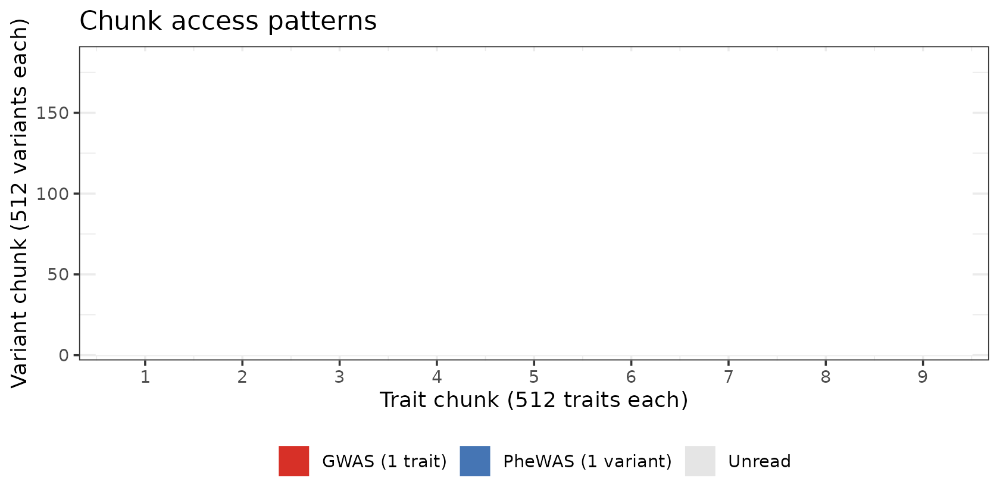

This vignette measures wall-clock time for each query type against the main pleiodb database (95,378 variants × 4,159 traits, chunk shape 512 × 512).
library(pleiodbr)
library(ggplot2)
library(dplyr)
#>
#> Attaching package: 'dplyr'
#> The following objects are masked from 'package:stats':
#>
#> filter, lag
#> The following objects are masked from 'package:base':
#>
#> intersect, setdiff, setequal, union
db <- open_pleiodb("/local-scratch/data/pleiodb/main.pleiodb")
db
#> pleiodb database
#> path: /local-scratch/data/pleiodb/main.pleiodb
#> format version: 3
#> variants (V): 95,378
#> traits (T): 4,159
#> chunk shape: 512×512Helper used throughout — runs a thunk and returns elapsed seconds.
elapsed <- function(expr) system.time(expr)[["elapsed"]]PheWAS — one variant across all traits
A PheWAS reads one row of the z-score matrix (one variant × every trait). The database has 9 trait chunks, so at minimum that many compressed chunks must be decompressed per query.
t_phewas <- elapsed(pw <- phewas(db, "19:45412079_C_T"))
cat(sprintf("PheWAS single variant: %.1f s (%d associations returned)\n",
t_phewas, nrow(pw)))
#> PheWAS single variant: 2.3 s (3382 associations returned)PheWAS — genomic region
A region PheWAS iterates over every variant in the window. Time scales roughly linearly with the number of matched variants because each additional variant adds one more set of trait-chunk reads (for both z-score and Neff).
# 100 kb window centred on the FTO peak (chr16 ~53.8 Mb)
n_fto <- sum(
db$variants$chrom == "16" &
db$variants$pos >= 53.75e6 &
db$variants$pos <= 53.85e6
)
cat("Variants in FTO 100 kb window:", n_fto, "\n")
#> Variants in FTO 100 kb window: 6
t_fto <- elapsed(fto <- phewas(db, "16:53.75e6-53.85e6"))
cat(sprintf("PheWAS 100 kb region: %.1f s (%d associations, %d variants)\n",
t_fto, nrow(fto), n_fto))
#> PheWAS 100 kb region: 7.9 s (19493 associations, 6 variants)GWAS — all variants for one trait
A GWAS reads one column of the z-score matrix (every variant × one trait). The database has 187 variant chunks.
t_gwas <- elapsed(bmi <- gwas(db, "ukb-b-19953"))
cat(sprintf("GWAS single trait: %.1f s (%d associations returned)\n",
t_gwas, nrow(bmi)))
#> GWAS single trait: 4.1 s (67556 associations returned)Top hits — fast path (pre-built mask)
tophits() uses a pre-computed sparse COO index for the
two standard thresholds (5e-8 and 1e-5), so
only significant pairs are read rather than scanning the full
matrix.
# Single trait, genome-wide significance — uses 5e-8 mask
t_th1 <- elapsed(th1 <- tophits(db, traits = "ukb-b-19953", pval = 5e-8))
cat(sprintf("tophits 1 trait (mask, p<5e-8): %.2f s (%d hits)\n",
t_th1, nrow(th1)))
#> tophits 1 trait (mask, p<5e-8): 2.32 s (16 hits)
# Five traits, suggestive threshold — uses 1e-5 mask
five_traits <- c("ukb-b-19953", "ebi-a-GCST006867",
"ebi-a-GCST90018961", "ebi-a-GCST003116",
"ebi-a-GCST90002412")
t_th5 <- elapsed(th5 <- tophits(db, traits = five_traits, pval = 1e-5))
cat(sprintf("tophits 5 traits (mask, p<1e-5): %.2f s (%d hits)\n",
t_th5, nrow(th5)))
#> tophits 5 traits (mask, p<1e-5): 4.98 s (81 hits)Top hits — fallback scan
When a non-standard p-value threshold is requested the mask does not exist, so the function falls back to scanning each trait column in full — much slower.
t_scan <- elapsed(th_scan <- tophits(db, traits = "ukb-b-19953", pval = 1e-6))
cat(sprintf("tophits 1 trait (scan, p<1e-6): %.1f s (%d hits)\n",
t_scan, nrow(th_scan)))
#> tophits 1 trait (scan, p<1e-6): 2.7 s (24 hits)Associations — small variant × trait blocks
associations() reads individual cells; time scales with
the number of unique (variant-chunk, trait-chunk) intersections that
need to be read.
# Three variants near LDL-pathway genes present in this database
ldl_vars <- c(
"19:45412079_C_T", # APOE region
"1:55014160_C_T", # PCSK9 region
"2:21870368_A_G" # APOB region
)
two_traits <- c("ebi-a-GCST90018961", "ebi-a-GCST003116")
t_3x2 <- elapsed(a1 <- associations(db, variants = ldl_vars, traits = two_traits))
cat(sprintf("associations 3 variants × 2 traits: %.3f s (%d rows)\n",
t_3x2, nrow(a1)))
#> associations 3 variants × 2 traits: 1.291 s (5 rows)
# 10 random variants × 5 traits
set.seed(42)
vars_10 <- sample(db$variants$alid, 10)
traits_5 <- c("ukb-b-19953", "ebi-a-GCST006867",
"ebi-a-GCST90018961", "ebi-a-GCST003116",
"ebi-a-GCST90002412")
t_10x5 <- elapsed(a2 <- associations(db, variants = vars_10, traits = traits_5))
cat(sprintf("associations 10 variants × 5 traits: %.3f s (%d rows)\n",
t_10x5, nrow(a2)))
#> associations 10 variants × 5 traits: 1.758 s (41 rows)Summary
| Query | Time (s) | Rows returned |
|---|---|---|
| phewas() — single variant | 2.32 | 3,382 |
| phewas() — 100 kb region (6 variants) | 7.90 | 19,493 |
| gwas() — single trait | 4.11 | 67,556 |
| tophits() — 1 trait, p<5e-8 (mask) | 2.32 | 16 |
| tophits() — 5 traits, p<1e-5 (mask) | 4.98 | 81 |
| tophits() — 1 trait, p<1e-6 (scan) | 2.69 | 24 |
| associations() — 3 × 2 | 1.29 | 5 |
| associations() — 10 × 5 | 1.76 | 41 |
What drives query time?
Each .pleiodb chunk is a 512 × 512 zstd-compressed
block. pleiodbr groups query pairs by their natural chunk
boundaries and decompresses each unique chunk at most once per query,
mirroring the approach used by the Python pleiodb library.
The number of chunk decompressions therefore equals the number of
distinct (v-chunk, t-chunk) pairs touched:
- A PheWAS (1 variant, all traits) decompresses all 9 trait chunks — one per trait chunk, for both z-scores and Neff.
- A GWAS (1 trait, all variants) decompresses all 187 variant chunks.
- A tophits query with a pre-built mask reads only the chunks that contain at least one significant pair — usually a small fraction of the full matrix.
- The mask filter now also applies to non-standard
thresholds: e.g.
pval = 1e-6reads the1e-5mask (a superset) and filters, avoiding a full column scan.
The remaining gap relative to Python is per-element decode overhead:
Python decodes int16 arrays with NumPy’s frombuffer()
(zero-copy view into a buffer, then C-level arithmetic), while R uses
readBin() followed by as.double() and
element-wise arithmetic — about 3–4 ms per 512×512 chunk vs. ~0.5 ms in
Python. Each function call from R also carries R-interpreter overhead
that NumPy’s C loops avoid entirely.

Python comparison
The pleiodb Python library implements the same queries with NumPy, achieving roughly an order of magnitude lower latency than R for the same database.
Equivalent Python code for the two core queries:
import sys, time
sys.path.insert(0, "/path/to/pleiodb/src")
from pleiodb.db import GWASDatabase
db = GWASDatabase.open("/local-scratch/data/pleiodb/main.pleiodb")
v = db.variant_index(["19:45412079_C_T"])[0]
# PheWAS — one variant × all traits
t0 = time.perf_counter()
z = db.zscore_variant(v) # reads 9 trait chunks; returns float32(T)
print(f"PheWAS: {(time.perf_counter()-t0)*1000:.1f} ms")
# GWAS — all variants × one trait
t = db.trait_index(["ukb-b-19953"])[0]
t0 = time.perf_counter()
z = db.zscore_trait(t) # reads 187 variant chunks; returns float32(V)
print(f"GWAS: {(time.perf_counter()-t0)*1000:.1f} ms")Timings recorded on the same server (main.pleiodb, 95 k
variants × 4,159 traits):
| Query | R (s) | Python (ms) | R / Python |
|---|---|---|---|
| phewas() / zscore_variant() — 1 variant | 2.32 | 4.1 | 566 |
| gwas() / zscore_trait() — 1 trait | 4.11 | 96.2 | 43 |
| tophits() p<5e-8 (mask) — 1 trait | 2.32 | NA | NA |
Both implementations make the same number of chunk reads and
decompressions. The residual R overhead is per-element decode cost:
readBin() + as.double() + arithmetic allocates
two R vectors and iterates in the R interpreter, whereas NumPy’s
frombuffer() is a zero-copy view followed by vectorised C
arithmetic. For workflows where sub-second PheWAS latency is critical,
call the Python library from R via reticulate.
Tips for faster queries
Use the pre-built masks for top-hits. Supplying exactly
5e-8or1e-5totophits()hits the fast path; any other threshold triggers a full column scan.Batch association lookups. For many (variant, trait) pairs spread across the same chunks, a single
associations()call is more efficient than looping over individualphewas()orgwas()calls, because each chunk is read only once per block.Narrow regions for PheWAS. Runtime scales roughly with the number of variants in the window. A 100 kb locus typically contains ~6–10× fewer variants than a 1 Mb window, reducing runtime proportionally.